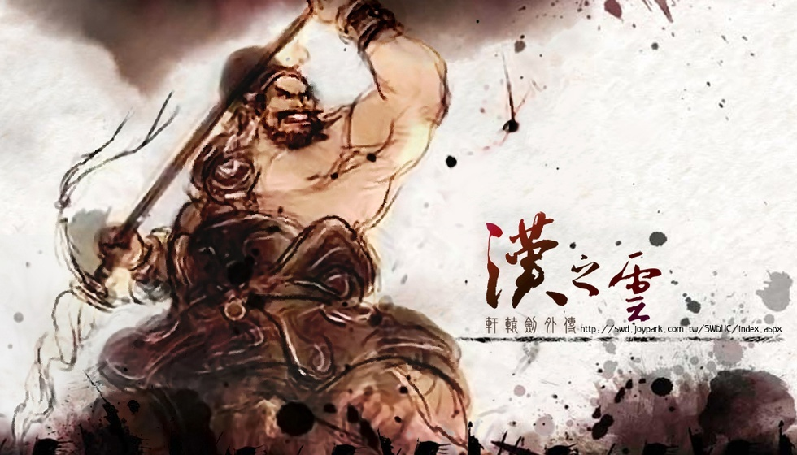

全网怒喷的烂尾神作，凭什么让老玩家十年不敢说它好？

你当年有没有因为结局太憋屈，直接把手柄摔在沙发上，顺手去论坛打了差评？十几年过去了，提起《轩辕剑：汉之云》，评论区依然扎满了“魔改丞相”和“横艾背锅”的钉子。但有个现象特别拧巴——骂得越狠的那批老玩家，反而最不敢重开二周目。不是怕画面辣眼，是怕看懂那些当年没在意的对话后，承认自己其实哭过。
说白了，咱们这帮人当初摔手柄，十有八九是踹错了墙。大伙儿进游戏前都揣着玩《天之痕》《苍之涛》那套预期——少年出山、奇遇不断、终成一代大侠，标准的金庸式成长礼包。结果DOMO直接甩过来一碗古龙式冷酒，主角焉逢上来就是满级号，不聊梦想只聊生存。这错位感就好比你点开《仙剑》想嗑CP，屏幕里演的却是《东邪西毒》，满屏都是成年人的拧巴和欲言又止。根本不是游戏拉胯，是咱们的期待值从一开始就没对上频道。
换个视角看，当年铺天盖地的“烂尾”骂声，真的全是DOMO赶工的锅吗？2007年那会儿，国产单机市场被盗版薅得毛都不剩，预算砍到骨头里，能端出一套完整逻辑的剧本已经是极限了。可那时候的玩家被廉价爽文喂大了胃口，谁有耐心品咂什么“留白美学”？看到一个“尽力局”的悲剧收场，第一反应就是制作组敷衍交差。说白了，这根本是一场时代错配的惨案——饿疯了的食客冲进米其林后厨，嫌人家出菜慢，却看不懂灶台上炖的是佛跳墙。咱们现在回过头才惊觉，当年骂的那些“虎头蛇尾”，根本是拿着泡面标准去审判满汉全席。
别急着杠，咱们把进度条拖回第四次北伐那场文戏。DOMO巅峰期的功力全浓缩在两场军营开会里了，没有光污染大招，全凭台词硬磕。焉逢的“心软”人设在这就钉死了——队友当面撕逼、互相甩锅，他硬是压着火气一碗水端平。这种领导风格搁现在职场就是“背锅侠型主管”，看得咱们这些社畜直拍大腿：太真实了，大公司站队都没飞羽军营这么窒息。再看彊梧，平时拌嘴永远输，像个老好人，但只要有人质疑诸葛亮一句，他立马炸毛翻脸。就这一处细节，直接把后期他为丞相舍弃兄弟情的结局埋死了，这种草蛇灰线的写法，多少年没在国产RPG里见过了？
至于中期那个被骂成“灌水迷宫”的三神器支线，我劝各位别急着点跳过。DOMO在这挖了一个巨高级的叙事陷阱——让你跑断腿搜集一套神器，最后告诉你屁用没有，纯白忙活。很多玩家当场摔键盘骂娘，但你品品这操作：这不就是拿游戏机制在扇咱们功利心巴掌吗？它故意让你亲手触摸“无意义”，逼你跳出蜀汉单一阵营的舒适区，去看看魏国吴国老百姓的日子。这种“反套路”设计在当年比直接给你一把屠龙刀高级一百倍，它嘲讽的正是咱们这些RPG老油条“没收益就不做任务”的功利思维。可惜那时候大家只想要数值碾压的快感，没人愿意接DOMO递过来的这杯哲学苦茶。
至于那个被骂了十几年的千古罪人横艾，这锅真得给她卸了。端蒙的死是执念缠身，游兆的亡是自负害命，彊梧的殉道是为守底线——所有人的结局都是性格驱动下的必然坍缩，跟横艾半毛钱关系没有。她一个活了千年的仙人，捻着草叶看凡人争权夺利，那份疏离感恰恰是整部游戏最悲悯的视角。包括说抹黑诸葛亮，更是扯远了。游戏里白纸黑字敬他惜兵爱民、蚕食凉州是长远之策，批判的只是晚年那份明知不可为而为之的执念。这哪是黑丞相？这是把英雄从神坛拉回人间，让他像咱们普通人一样，在理想和现实之间被碾得血肉模糊。
所谓神作，往往不是因为它圆满了什么，而是它敢于撕碎什么。《汉之云》用一整个乱世告诉咱们：成年人的世界里没有“全都要”的选项，每一个选择背后都站着代价，每一个英雄身上都背着骂名。那些当年摔手柄的兄弟，现在要是能沉下心重看一遍结局动画，估计多半会默默点根烟，然后承认——不完美的结局，才是对咱们这些普通人最大的尊重。
关于我们
📱 公众号名称：三天游戏
✍️ 作者：曾三天
扫码关注公众号，获取每日最新资讯

商务合作与版权
商务合作 / 内容投稿 / 品牌推广
请关注公众号「三天游戏」后台留言联系
版权声明：本文由作者整理，转载需注明出处。